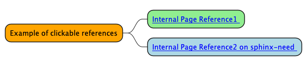

Test PlantUML 3# Heading 3 1# Some Text here PlantUML Caption with bold and italic Heading 3 2# Some other text here  PlantUML Caption with bold and italic# Need: Some Other Need N_00002 status: open Some Other Need description